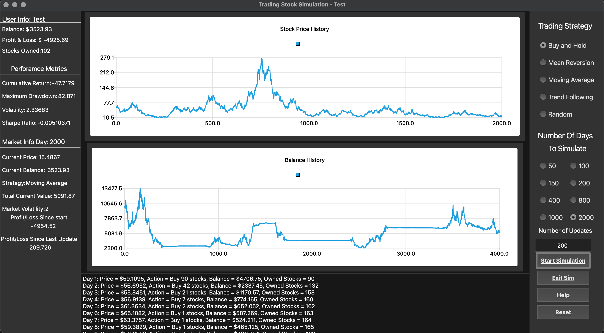

About Me
Hey 👋 I'm Shahid, a second-year Computer Science student.
I love learning about low-level and systems programming. I'm currently interested in programming language theory, operating systems, and computer graphics.
Projects
Stock Trading Simulation | C++, Qt Creator

Developed a stock trading simulation application using C++ and Qt, implementing a Geometric Brownian Motion model to simulate realistic stock price movements, enhancing market trend accuracy.
- Engineered a trading bot with multiple strategies, including Buy and Hold, Mean Reversion, Moving Average, and Trend Following, achieving dynamic strategy execution based on real-time market events.
- Designed a user-friendly graphical interface with real-time updates and interactive charts, improving user engagement and facilitating in-depth trading performance analysis.
- Integrated comprehensive performance analytics, such as cumulative return, maximum drawdown, volatility, and Sharpe ratio, providing detailed insights into trading strategy effectiveness.